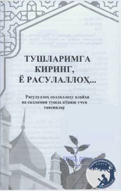

TKPayg'ambarimiz Muhammad sollallohu alayhi vasallamni tushda ko'rish odoblari va tavsiyalari haqidagi qo'llanma.
Ushbu kitob Payg'ambarimiz Muhammad sollallohu alayhi vasallamni tushda ko'rish odoblari va tavsiyalari haqida so'z yuritadi. Unda tushda ko'rilgan zotning haqiqatdan ham Rasululloh ekanligini anglash va bu boradagi noto'g'ri tushunchalarni bartaraf etish yo'llari bayon qilingan.